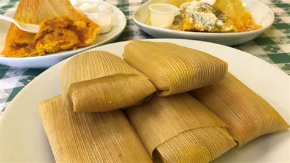

Tamales

Mexican tamales are a traditional dish that consist of a mixture of masa (a dough made from corn) and fillings such as meat, cheese, or vegetables, wrapped in a corn husk or banana leaf and steamed. Tamales are a staple in Mexican cuisine and are often enjoyed as a festive or everyday food.
Tamales are a time-consuming dish to make, but the process is often a family affair and the end result is a delicious and satisfying meal. The masa is made by mixing ground corn, lard or vegetable shortening, and seasonings such as salt, baking powder, and chicken or beef broth. The masa is then spread on a soaked corn husk or banana leaf and a filling is added on top, it is then folded, and steamed until cooked through. Tamales can be filled with different meats such as chicken, pork, beef, or it can also be filled with sweet fillings like sweet corn or sweet potato. Tamales are often served with a tomato or mole sauce, and they can be eaten as a main dish, side dish or as an appetizer.
Ingredients
- 2 cups of masa harina
- 1/2 cup of lard or vegetable shortening
- 1 teaspoon of baking powder
- 1 teaspoon of salt
- 2 cups of chicken or beef broth
- 1 pound of cooked and shredded chicken, pork, or beef
- 1 cup of enchilada sauce
- 2 cups of shredded cheese
- 2 cups of fresh corn husks
Instructions
- Soak the corn husks in warm water for 30 minutes to soften them.
- In a large mixing bowl, combine the masa harina, baking powder, and salt.
- In a separate bowl, beat the lard or vegetable shortening until fluffy.
- Slowly add the masa mixture to the lard or vegetable shortening and mix until well combined.
- Gradually add the broth and mix until the dough is smooth and easy to handle.
- Spread a spoonful of dough onto each corn husk and then add a spoonful of your filling of choice. (Meat, cheese, vegetable)
- Roll the tamale from the bottom, tucking in the sides as you roll.
- Steam the tamales for 1 hour.
- Remove from the steamer and let them cool for a few minutes before serving.